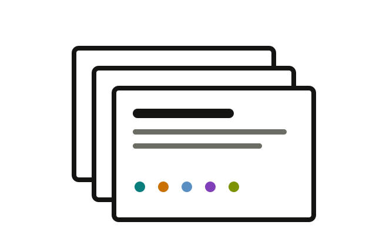
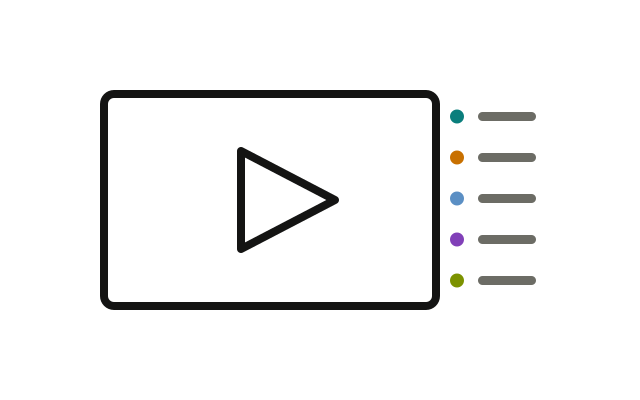

Vollständiges Material
Full Slide Deck
Ein vollständiger Überblick über das Lehrmaterial in einem Foliensatz. Er dient als Nachschlagewerk und als Quelle für workshopspezifische Foliensätze.
- Markdown · folgt
- PDF · folgt
Diese Lehrreihe untersucht, wie Sprachmodelle, die auf umfangreichen Textkorpora trainiert sind, Anweisungen verarbeiten und kontextabhängige Sprache erzeugen. in Arbeitsumgebungen, die ein Sprachmodell mit Projektkontext, Dateien, Werkzeugen und kontrollierten Handlungsmöglichkeiten verbinden. für computer- und datenbasierte Wissensarbeit eingesetzt werden. Die fünf Module verbinden Modellgrundlagen mit Die iterative Gestaltung und Prüfung von Anweisungen für ein bestimmtes Modell und eine bestimmte Aufgabe., Explizites Projektwissen pflegen und die Informationen zusammenstellen, die ein Modell für die aktuelle Aufgabe benötigt., Erweiterte Arbeit über Werkzeugnutzung, Zwischenergebnisse, Berechtigungen, Rückmeldungen und menschliche Prüfung organisieren. sowie Technische Eigenschaften prüfen, fachliche Akzeptanz dokumentieren und Verantwortung für die Nutzung festlegen.. Das gemeinsame Full Slide Deck, zwei Sprachfassungen der Full Lecture Notes und eine geordnete Video-Playlist tragen das Material; jeder Workshop wählt daraus aus und passt Inhalte, Aufgaben und Lehrsprache an ein definiertes Fachgebiet an.
Im Vorbereitungstutorial erfährst du, wie du alles für die Teilnahme an einem Workshop einrichtest.

Vollständiges Material
Ein vollständiger Überblick über das Lehrmaterial in einem Foliensatz. Er dient als Nachschlagewerk und als Quelle für workshopspezifische Foliensätze.

Vollständiges Material
Die ausformulierte Fassung der Folien mit Erklärungen und Kontext zum Lesen und Nachschlagen.

YouTube
Eine geordnete Videoreihe von den Grundlagen zu vertiefenden Themen, die laufend gepflegt und erweitert wird.
Von der Grundlage zur Spezialisierung
Beginne mit übertragbarer Coding Literacy, vergleiche drei AI Harnesses und führe den Weg in einen Forschungsworkflow weiter.
Externes Curriculum · Deutsch
Aufgaben beschreiben, Dateien und Ausgaben lesen, Berechtigungen kontrollieren und Ergebnisse prüfen.
Modul 04 · Verfügbar
Projektanweisungen, Berechtigungen, Erweiterungen und delegierte Arbeit in einem Terminal- und Editor-Harness.
Modul 04 · Verfügbar
Repository-Anweisungen, nachvollziehbare Diffs, Sandbox-Kontrollen und lesende Orientierung im Arbeitsordner.
Modul 04 · Verfügbar
Ein nachvollziehbares offenes Harness mit explizit konfiguriertem Anbieter und Prüfung der lokalen Inferenz.
Modul 03 · Vorbereiteter Weg
Geprüfte Quelldaten, gepflegtes Projektwissen und eine browsernative Forschungsanwendung verbinden.
In Vorbereitung
Jeder Workshop ist eine domänenspezifische Ableitung des Full Slide Decks. Er wählt gemeinsame Module aus, ordnet sie für die Veranstaltung neu und ergänzt passende Fälle, Übungen und Abläufe. Einige Erklärungen wiederholen sich bewusst, damit jeder Workshop eigenständig nutzbar bleibt.

Vier verbundene Einheiten verfolgen einen vollständigen Forschungsdaten-Workflow. Stefan Zweig Digital erklärt den Weg vom Nachlassmaterial zur Forschungsplattform. Die Hands-ons mit M³GIM führen über Informationsextraktion zu einer kleinen digitalen Forschungsanwendung.
Slide Deck und Lecture Notes in Vorbereitung

Der eintägige Workshop verbindet Forschungsdaten-Workflows und digitale Editionen. Zwei praktische Einheiten führen von der multimodalen Transkription einer Manuskriptseite zur schemabasierten Informationsextraktion und wissenschaftlichen Prüfung.
Slide Deck und Lecture Notes in Vorbereitung

Der erste Tag verbindet Modellgrundlagen, TEI-Modellierung, Context Engineering und Agentic Coding. Am zweiten Tag entwickeln die Teilnehmenden mit eigenem Material eine dokumentierte Wissensbasis und einen kleinen Editionsprototyp.
Slide Deck und Lecture Notes in Vorbereitung

Die Teilnehmenden arbeiten im AI Harness an mittelalterlichen Urkunden. Der Workflow führt von Handschriftenerkennung und Quellenprüfung über TEI XML und Entitätenregister zu einer kleinen statischen Edition.
Slide Deck und Lecture Notes in Vorbereitung
Halber Tag · hybrid

Der Workshop behandelt agentengestützte Datenaufbereitung, Migration und Interfacepflege. Fallstudien und ein Hands-on zeigen dokumentierte Transformationen mit maschinenlesbarem Projektwissen, Skripten und überprüfbaren Ergebnissen.
Slide Deck und Lecture Notes in Vorbereitung
3 × 2 Stunden

Drei Einheiten führen von Setup und Terminal über die eigene Wissensbasis zu einer kleinen Anwendung. Die Übungen verwenden ein synthetisches institutionelles Szenario und lassen sich auf den eigenen beruflichen Kontext übertragen.
Slide Deck und Lecture Notes in Vorbereitung

Der Blockkurs führt von Modellgrundlagen und Prompting über lokale Codeausführung und strukturierte Daten zu kontrollierten Agenten-Workflows. Ein eigenes Anwendungsprojekt verbindet die Übungen der gesamten Woche.
Slide Deck und Lecture Notes in Vorbereitung
Der Vorbereitungsleitfaden führt dich Schritt für Schritt durch alles, was du für die Teilnahme an einem Workshop vorbereiten musst. Jeder Schritt endet mit einer überprüfbaren Kontrolle.
Die Video-Playlist enthält die aktuell gepflegte Reihenfolge. Beim Öffnen eines Moduls mit Videos können Vorschaubilder von YouTube geladen werden.
 What Is Context Engineering? Why It Matters for AI Agents
What Is Context Engineering? Why It Matters for AI Agents
 Thinner Agents on a Smarter Substrate: The Ontology-based Semantic Layer
Thinner Agents on a Smarter Substrate: The Ontology-based Semantic Layer
 Why Agentic Systems Need Ontologies
Why Agentic Systems Need Ontologies
 Citation Needed: Provenance for LLM-Built Knowledge Graphs
Citation Needed: Provenance for LLM-Built Knowledge Graphs
 Wissens- und Projektmanagement mit Obsidian und Claude Code
Wissens- und Projektmanagement mit Obsidian und Claude Code
 Grounded Vault: Quellenbasiertes Arbeiten mit AI Agents
Grounded Vault: Quellenbasiertes Arbeiten mit AI Agents
 5 AI Agent Terms You Need to Know
5 AI Agent Terms You Need to Know
 AI Model vs Agentic Harness: What Actually Drives AI
AI Model vs Agentic Harness: What Actually Drives AI
 MCP vs Skills: Which Is Right for Your AI Agent and LLMs?
MCP vs Skills: Which Is Right for Your AI Agent and LLMs?
 5 Best Practices for Building AI Agent Skills
5 Best Practices for Building AI Agent Skills
 Agentic Engineering vs Software Engineering: Beyond Vibe Coding
Agentic Engineering vs Software Engineering: Beyond Vibe Coding
 The Best Local Agentic Coding Workflow (Complete Guide)
The Best Local Agentic Coding Workflow (Complete Guide)
 What I Use Instead
What I Use Instead
 Meet Pi: The Minimalist, Self-Modifying Coding Agent
Meet Pi: The Minimalist, Self-Modifying Coding Agent
 Building Pi, and What Makes Self-Modifying Software So Fascinating
Building Pi, and What Makes Self-Modifying Software So Fascinating
 I Hated Every Coding Agent, So I Built My Own (Pi)
I Hated Every Coding Agent, So I Built My Own (Pi)
 Einführung in Promptotyping (Teil 1)
Einführung in Promptotyping (Teil 1)
 Einführung in Promptotyping (Teil 2, Live Demo mit Claude Code)
Einführung in Promptotyping (Teil 2, Live Demo mit Claude Code)
 Anthropic's Dynamic Workflows: What Everyone Gets Wrong
Anthropic's Dynamic Workflows: What Everyone Gets Wrong
 Claude Can Now Build Its Own Harness for Every Task
Claude Can Now Build Its Own Harness for Every Task
 Agentic AI and the Future of Software Development
Agentic AI and the Future of Software Development
 Agentic Engineering für digitale Editionen mit Claude Code, TEI und GND
Agentic Engineering für digitale Editionen mit Claude Code, TEI und GND
 Agentic Engineering und digitale Edition mit Claude Code
Agentic Engineering und digitale Edition mit Claude Code
 Research Mission Control: Eine Forschungsleitstelle mit mehreren KI-Agenten
Research Mission Control: Eine Forschungsleitstelle mit mehreren KI-Agenten
 How to Use Multiple AI Agents in Your IDE
How to Use Multiple AI Agents in Your IDE
 This Meta-Harness Changes How You Run AI Agents
This Meta-Harness Changes How You Run AI Agents
 Loop Engineering: Why Everyone Is Talking About Agentic Loops
Loop Engineering: Why Everyone Is Talking About Agentic Loops
 Stop Building AI Agents the Old Way
Stop Building AI Agents the Old Way
 Matrix 2025: Gefangen in der Kalifornischen Ideologie – scobel
Matrix 2025: Gefangen in der Kalifornischen Ideologie – scobel
 Douglas Rushkoff – das Mindset der Tech-Milliardäre | Sternstunde Philosophie | SRF Kultur
Douglas Rushkoff – das Mindset der Tech-Milliardäre | Sternstunde Philosophie | SRF Kultur
 Die geheime Steuerung, die niemand wählte – scobel im Gespräch: Mit Anna-Verena Nosthoff
Die geheime Steuerung, die niemand wählte – scobel im Gespräch: Mit Anna-Verena Nosthoff
 Kybernetik kurz erklärt | 5 Fragen an Anna-Verena Nosthoff
Kybernetik kurz erklärt | 5 Fragen an Anna-Verena Nosthoff
 What the hell happened with AGI timelines in 2026?
What the hell happened with AGI timelines in 2026?
 Where AGI timelines go wrong | Toby Ord, Oxford University
Where AGI timelines go wrong | Toby Ord, Oxford University
 Can $500 Billion Win the AI Race? | Anton Leicht
Can $500 Billion Win the AI Race? | Anton Leicht